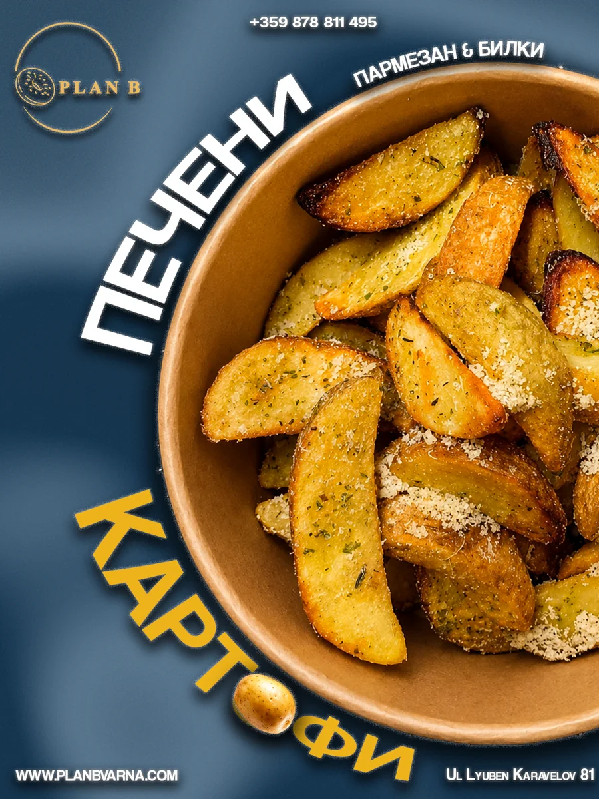
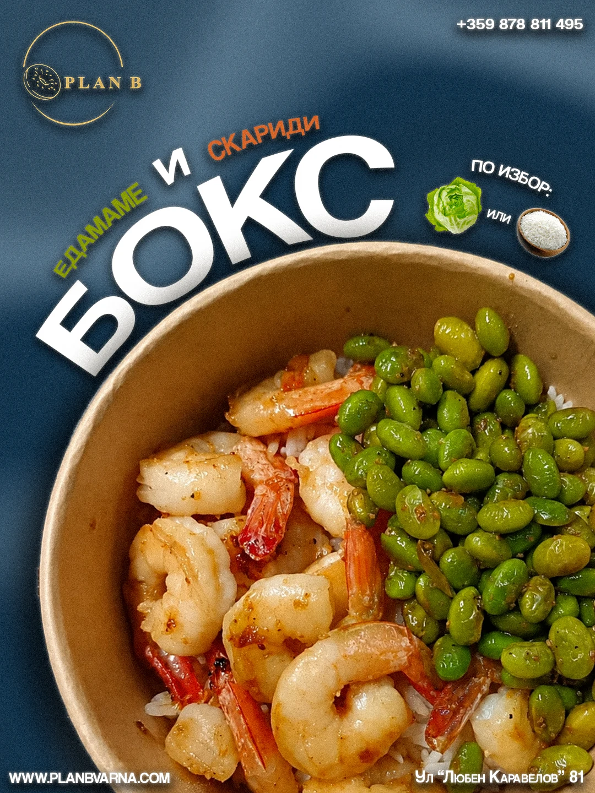
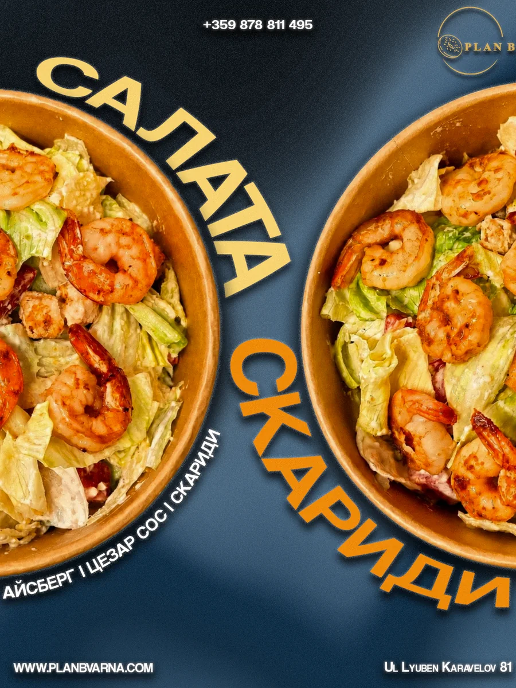
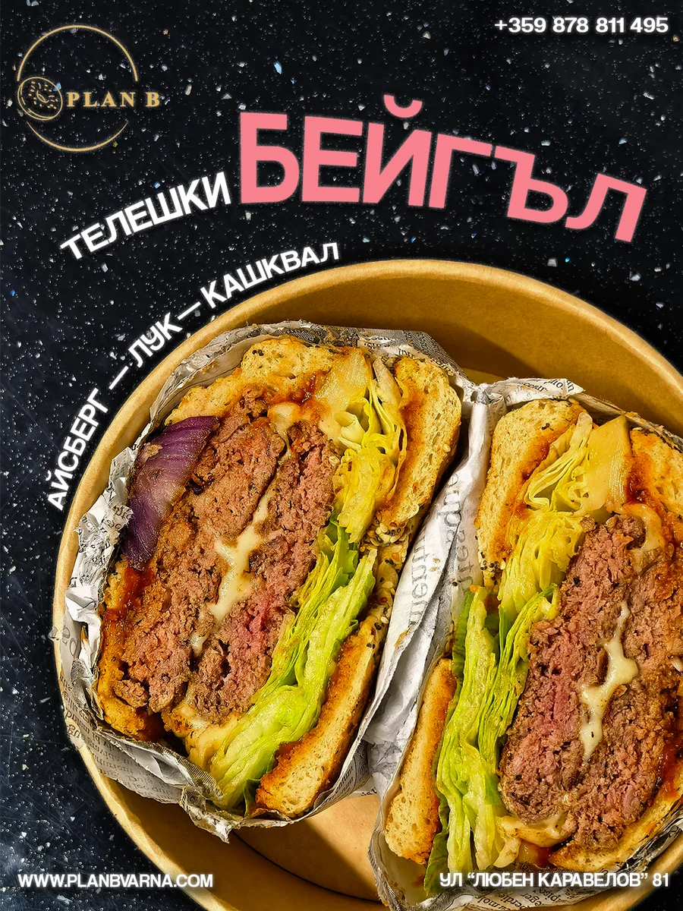
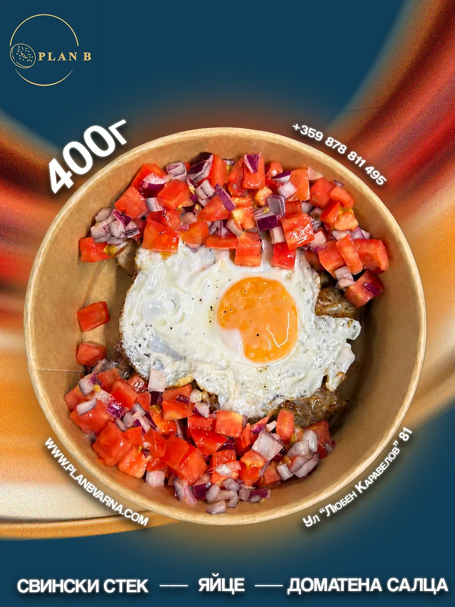
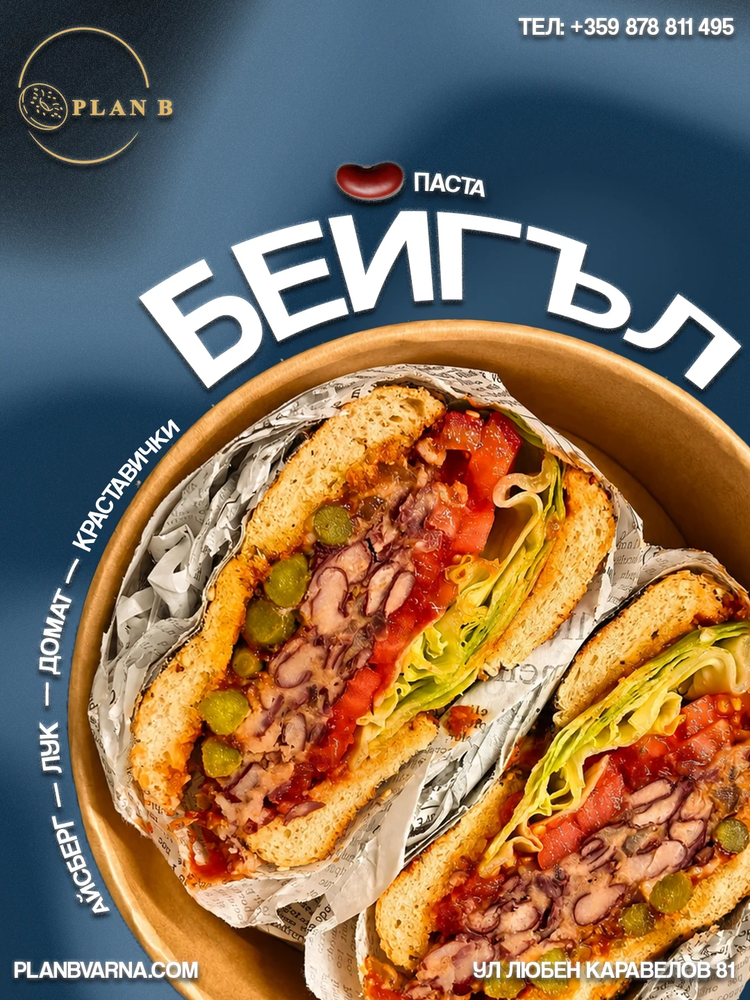
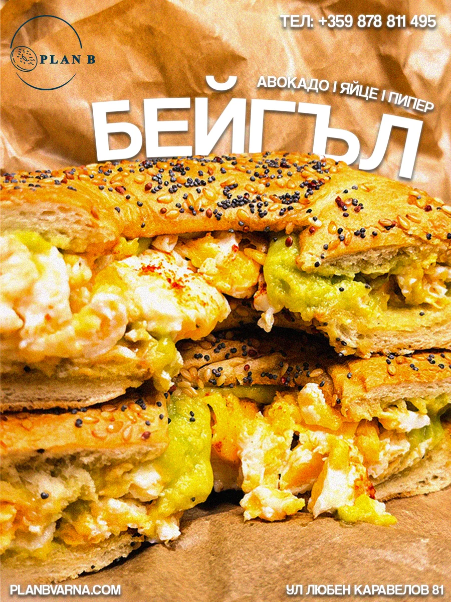
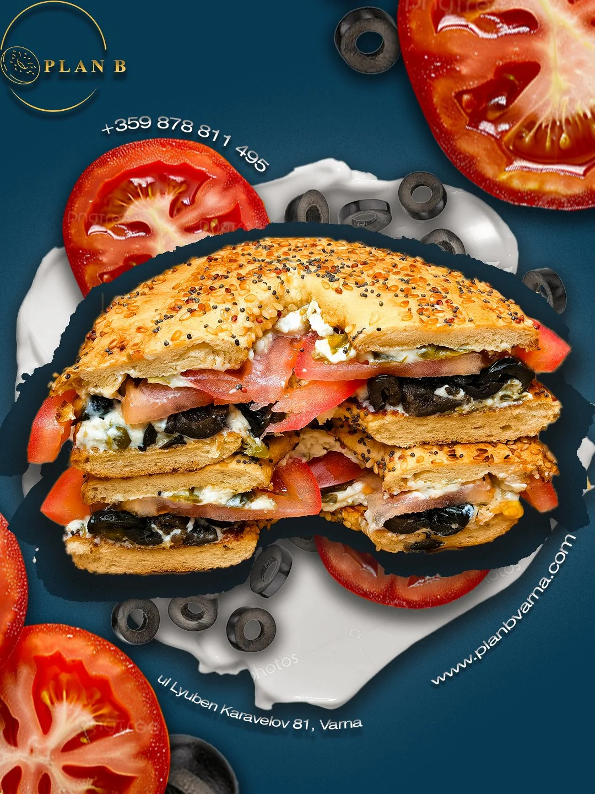

ONGOING CLIENT · SOCIAL DESIGN
Plan B Varna — Social Content Series
An ongoing monthly collaboration with a local food brand: eight social posts for July and another eight for August. I built a connected visual system using oversized typography, strong food crops and repeated brand details, while giving every post its own composition.
CLIENT TESTIMONIAL
Working with Vesselina is a real pleasure! She managed to present our place in the best possible way and show its character through great ideas and content. Thanks to her work, we became more recognizable and are reaching more people. Huge thanks to Vesselina for the professionalism, creativity and dedication with which she brought our Instagram profile to life!
Plan B Varna
CLIENT








SWIPE OR USE THE ARROWS · TAP A POST TO EXPAND